컴퓨터응용밀링기능사 (2009-03-29 기출문제)
1과목: 기계재료 및 요소
1. 피치가 2mm인 2줄 나사를 180° 회전시키면 나사가 축 방향으로 움직인 거리는 몇 mm인가?
- 1
- 2
- 3
- 4
(정답률: 65%)

2. 강의 잔류응력 제거를 주목적으로, 탄소강을 적당한 온도까지 가열한 후, 그 온도를 어느 정도 유지한 다음 열 처리로 내어서 서서히 냉각시켜 열처리 하는 방법은?
- 담금질
- 풀림
- 뜨임
- 심랭처리
(정답률: 53%)
3. 재료의 인장실험 결과 얻어진 응력-변형률 선도에서 응력을 증가시키지 않아도 변형이 연속적으로 갑자기 커지는 것을 무엇이라 하는가?
- 비례한도
- 탄성변형
- 항복현상
- 극한강도
(정답률: 44%)
4. 그림과 같은 스프링 조합에서 스프링 상수는 몇 kgf/cm인가?(단, 스프링상수 k1, = 50kgf/cm, k2, = 50kgf/cm, k3, = 100kgf/cm 이다.)
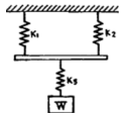
- 300
- 200
- 150
- 50
(정답률: 31%)
5. 두 축이 같은 평면 내에 있으면서 그 중심선이 어느 각도로 교차하고 있을 때 사용하는 축 이음으로 자동차, 공작기계 등에 사용되는 것은?
- 플렉시블 커플링
- 플랜지 커플링
- 유니버설 조인트
- 셀러 커플링
(정답률: 49%)
6. 우드러프 키라고도 하며, 일반적으로 60mm 이하의 작은 축에 사용되고 특히 테이퍼 축에 편리한 키는?
- 원뿔키
- 성크 키
- 반달키
- 평키
(정답률: 65%)
7. 베어링의 호칭번호 6203의 안지름 치수는 몇 mm인가?
- 10
- 12
- 15
- 17
(정답률: 60%)
8. 벨트를 걸었을 때 이완측에 설치하여 벨트와 벨트 풀리의 접촉각을 크게 해주는 것은?
- 긴장차
- 안내차
- 공전차
- 단차
(정답률: 38%)
9. 브레이크 재료로 사용시 마찰계수가 가장 큰 것은?(단, 마찰 조건은 건조 상태이다)
- 주철
- 가죽
- 연강
- 석면
(정답률: 43%)
10. 다이캐스팅 합금으로 요구되는 성질이 아닌 것은?
- 유동성이 좋을 것
- 금형에 대한 정착성이 좋을 것
- 응고수축에 대한 용탕 보금성이 좋을 것
- 열간취성이 적을 것
(정답률: 42%)
11. 다른 구리합금에 비하여 강도, 경도, 인성, 내마멸성, 내열성 및 내식성 등의 기계적 성질 및 내피로성이 우수하여 선박용 추진기 재료로 활용되며, 자기 풀림 현상이 나타나는 청동은?
- 베릴륨 청동
- 인 청동
- 납 청동
- 알루미늄 청동
(정답률: 41%)
12. 비중이 10.497 용융점이 960℃인 금속으로 열 전도도 및 전기 전도도가 양호한 것은?
- 은(Ag)
- 구리(Cu)
- 금(Au)
- 마그네슘(Mg)
(정답률: 51%)
13. 펄라이트 주철이며 흑연을 미세화시켜 인장강도를 245MPa 이상으로 강화시킨 주철로서 피스톤에 가장 적합한 주철은?
- 보통 주철
- 고급 주철
- 구상흑연 주철
- 가단 주철
(정답률: 50%)
14. 탄성 한도 및 피로 한도가 높아 스프링을 만드는 재료로 가장 적합한 것은?
- SPS6
- SKH4
- STC4
- SS330
(정답률: 47%)
15. 금속 및 경질의 금속간 화합물로 이루어지고, 그 경질상 중의 주성분이 WC인 것으로 독일의 워디아 제품을 시작으로 미국의 카아볼로이, 영국의 미디아, 일본의 텅갈로이 등 제품이 소개된 이것을 무엇이라 하는가?
- 탄화물 합금
- 고속도강
- 초경합금
- 주조경질합금
(정답률: 46%)
2과목: 기계제도(절삭부분)
16. 분할 핀의 호칭법으로 알맞은 것은?
- 분할 핀 KS B 1321 - 등급 - 형식
- 분할 핀 KS B 1321 - 호칭지름 × 길이, 지정사항
- 분할 핀 KS B 1321 - 호칭지름 × 길이 - 재료
- 분할 핀 KS B 1321 - 길이 - 재료
(정답률: 60%)
17. 보기와 같은 표면의 결 도시기호 해독으로 틀린 것은?
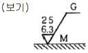
- G는 연삭 가공을 의미한다.
- M은 커터의 줄무늬 방향기호
- 최대 높이 거칠기 값은 25 μm
- 표면 거칠기 구분 값의 하한은 6.3 μm
(정답률: 42%)
18. 보기 도면에서 a 부분에 표시되어야 할 기하공차의 기호로 가장 적합한 것은?
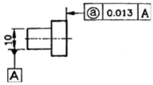
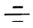
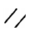
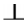
(정답률: 54%)
19. 구멍이
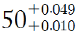
이고, 축이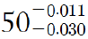
일 때 최대 틈새는?- 0.021
- 0.040
- 0.060
- 0.079
(정답률: 65%)
20. 보기의 입체도에서 화살표 방향이 정면도일 경우 평면 도로 가장 적합한 것은?
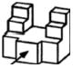
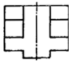
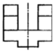
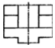
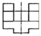
(정답률: 77%)
21. 실물길이가 100mm인 형상을 1:2로 축척하여 제도한 경우 다음 설명 중 올바른 것은?
- 도면에 그려지는 길이는 50mm 이고, 치수는 100mm로 기입한다.
- 도면에 그려지는 길이는 100mm 이고, 치수는 50mm로 기입한다.
- 도면에 그려지는 길이는 50mm이고, 치수는 50mm로 기입한다.
- 도면에 그려지는 길이는 100mm이고, 치수는 100mm로 기입힌다.
(정답률: 66%)
22. KS 나사 표시법에서 "왼 2줄 M20 x 1.5 - 6H"로 표시된 경우 "1.5"은 나사의 무엇을 나타낸 것인가?
- 피치
- 1인치당 나사 산수
- 등급
- 산의 높이
(정답률: 71%)
23. 투상도법 중 제 1각법과 제 3각법이 속하는 투상 도법은?
- 정투상법
- 등각투상법
- 경사투상법
- 다이메트릭투상법
(정답률: 69%)
24. 보기 입체도에서 화살표 방향을 정면도로 할 경우 제 3각법에 의한 투상도로 가장 적합한 것은?
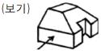
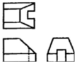
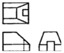
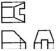
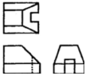
(정답률: 68%)
25. 기계제도에서 물체의 보이는 부분의 형상을 나타내는 외형선으로 사용하는 선은?
- 가는 실선
- 굵은 1점 쇄선
- 굵은 실선
- 가는 1점 쇄선
(정답률: 68%)
26. 밀링 커터의 공구가 중 날의 윗면과 날끝을 지나는 중심선 사이의 각으로 크게 하면 절삭 저항은 감소하나 날이 약해지는 단점을 갖는 것은?
- 랜드
- 경사각
- 날끝각
- 여유각
(정답률: 49%)
27. 탭의 파손 원인으로 관계가 먼 것은?
- 탭이 경사지게 들어간 경우
- 막힌 구멍의 밑바닥에 탭의 선단이 닿았을 경우
- 나사 구멍이 너무 크게 가공된 경우
- 탭의 지름에 적합한 핸들을 사용하지 않는 경우
(정답률: 67%)
28. 길이 측정시 오차를 최소로 줄이기 위해서 [표준자와 피측정물은 동일 축선상에 위치하여야 한다]는 원리는?
- 아베의 원리
- 테일러의 원리
- 요한슨의 원리
- NPL식 원리
(정답률: 67%)
29. 밀링 머신의 부속장치가 아닌 것은?
- 면판
- 분할대
- 슬로팅 장치
- 래크 절삭장치
(정답률: 57%)
30. 지름이 작은 가공물이나 각 봉재를 가공할 때 편리하며, 보통 선반에서 사용할 경우에는 주축의 테이퍼 구멍에 슬리브를 끼우고 여기에 부착하여 사용하는 척은?
- 유압 척
- 콜릿 척
- 마그네틱 척
- 연동 척
(정답률: 57%)
3과목: 기계공작법
31. 수평밀링머신의 프레인 커터 작업에서 상향절삭과 비교한 하향절삭(내려깍기)의 장점으로 옳은 것은?
- 날 자리 간격이 짧고, 가공면이 깨끗하다.
- 기계에 무리를 주지 않는다.
- 이송 기구의 백래시가 자연히 제거된다.
- 절삭열에 의한 치수 정밀도의 변화가 작다.
(정답률: 45%)
32. 일반적으로 요구되는 절삭공구의 조건으로 틀린 것은?
- 가공재료보다 경도가 클 것
- 인성과 내마모성이 작을 것
- 고온에서 경도를 유지할 것
- 성형성이 좋을 것
(정답률: 66%)
33. 정밀도가 매우 높은 공작기계로 항온실에 설치하며 주로 공구나 지그가공을 목적으로 사용되는 보링머신은?
- 수평형 보링 머신
- 수직형 보링 머신
- 지그 보링 머신
- 정밀 보링 머신
(정답률: 61%)
34. 공구의 회전 운동과 공작물의 직선 운동에 의하여 일감을 가공하는 공작기계는?
- 선반
- 셰이퍼
- 슬로터
- 밀링 머신
(정답률: 60%)
35. 다음 중 나사의 유효지름을 측정할 때 가장 정밀도가 높은 측정법은?
- 공구현미경에 의한 측정
- 투영기에 의한 측정
- 나사 마이크로미터에 의한 측정
- 삼침법에 의한 측정
(정답률: 38%)
36. 절삭 공구로 공작물을 가공할 때 연속형(유동형)칩의 발생조건에 해당하지 않는 것은?
- 절삭 속도가 빠를 때
- 이송 속도가 빠를 때
- 공구의 윗면 경사각이 클 때
- 재질이 연한 공작물을 가공할 때
(정답률: 45%)
37. 센터리스 연삭의 장점이 아닌 것은?
- 센터 구멍을 뚫을 필요가 없다.
- 지름이 크고 무거운 공작물에 적합하다.
- 공구의 윗면 경사각이 클 때
- 재질이 연한 공작물을 가공할 때
(정답률: 57%)
38. 절삭 가공을 할 때 열이 발생하는 이유와 가장 관계가 적은 것은?
- 칩과 공구의 경사면이 마찰할 때
- 공구의 여유면을 따라 칩이 일어날 때
- 전단면에서 전단 소성 변형이 일어날 때
- 공구 여유면과 공작물 표면이 마찰할 때
(정답률: 38%)
39. 일반적으로 연삭 숫돌의 표시는 WAㆍ48ㆍHㆍmㆍs와 같은 방법으로 표시한다. 여기서 s가 의미하는 것은?
- 입도
- 결합제
- 조직
- 연삭숫돌 입자
(정답률: 56%)
40. 선반 주요 부분의 명칭에 해당하지 않는 것은?
- 주축대
- 심압대
- 베드
- 니이
(정답률: 74%)
4과목: CNC공작법 및 안전관리
41. 방전 가공용 전극 재료의 조건으로 틀린 것은?
- 방전이 안전하고 가공속도가 클 것
- 가공 전극의 소모가 많을 것
- 가공 정밀도가 높을 것
- 구하기 쉽고 값이 저렴할 것
(정답률: 76%)
42. 머시닝센터에서 직경 25mm인 앤드밀로 주철을 가공하려고 할 때 주축의 회전수는 약 몇 rpm인가?(단, 주철의 추천 절삭속도는 50m/min이다)
- 393
- 593
- 637
- 897
(정답률: 54%)
43. 다음의 CNC 프로그램 시트에서 F300의 의미는?
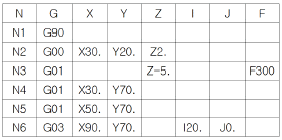
- 주축 회전수
- 공구 선택번호
- 공구 보정번호
- 절입시 이송속도
(정답률: 65%)
44. 날 수가 4개인 밀링 커터로 공작물을 1날당 0.1mm로 이송하여 절삭하는 경우 이송 속도는 몇 mm/min인가?(단. 주축 회전수는 500rpm이다.)
- 80
- 150
- 200
- 250
(정답률: 59%)
45. 머시닝센터 프로그램에서 그림과 같은 증분좌표 지령으로 맞는 것은?
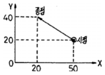
- G90 X20. Y40. ;
- G91 X-30. Y20. ;
- G90 X50. Y20. ;
- G91 X30. Y-20. ;
(정답률: 55%)
46. CNC선반 프로그램에서 G99 기능의 이송 단위는?
- mm/rev
- mm/drg
- mm/min
- mm/sec
(정답률: 55%)
47. CNC선반에서 나사 절삭시 이송기능에 사용되는 숫자는 나사의 호칭법에서 무엇에 해당하는가?
- 피치
- 감긴 방향
- 호칭 지름
- 리드
(정답률: 52%)
48. 공구 보정에 대한 설명으로 틀린 것은?
- G49는 공구 길이 보정 취소를 의미한다.
- G41, G42는 중복하여 지령할 수 있다.
- 공구인선 반경 보정을 시작하는 block을 Start-Up block이라 한다.
- G40은 공구 지름 보정 취소를 의미한다.
(정답률: 55%)
49. 공작 기계의 안전 수칙에 대한 설명으로 틀린 것은?
- 공작 기계 작업시 항상 보안경을 착용한다.
- 칩을 제거할 때는 회전 중에 장갑을 끼고 제거한다.
- 절삭중이나. 회전 중에는 일감을 측정하지 않는다.
- 기계의 회전을 손이나 공구로 멈추지 않는다.
(정답률: 81%)
50. 다음 도면에서 A점에서 B점으로 가공하는 CNC선반 프로그램으로 맞는 것은?(오류 신고가 접수된 문제입니다. 반드시 정답과 해설을 확인하시기 바랍니다.)
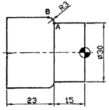
- G02 X33.0 Z-18.0 R3.0
- G03 X33.0 Z-18.0 R3.0
- G02 X36.0 Z-18.0 R3.0
- G03 X36.0 Z-18.0 R3.0
(정답률: 40%)
51. CNC 선반의 기계 일상 점검 중 매일 점검 항목으로 볼수 없는 것은?
- 기계 정도 검사
- 외관 검사
- 유량 검사
- 압력 검사
(정답률: 51%)
52. CNC 공작기계의 제어 방식이 아닌 것은?
- 위치를 결정 제어
- 모방 제어
- 직선절삭 제어
- 윤곽절삭 제어
(정답률: 63%)
53. CNC 밀링에서 나선 홈 절삭에 필요한 부가축(A,B,C)에 해당되는 범용 밀링머신의 부속장치는?
- 아버
- 수직축 장치
- 분할대
- 밀링 바이스
(정답률: 39%)
54. CNC 공작기계의 절삭 가공에 따른 안전사항으로 틀린 것은?
- 운전 중 비상시에는 비상정지 버튼을 누른다.
- 충돌 사고에 유의한다.
- 공작물은 경고하게 고정하고 절삭을 하여야 한다.
- 자동운전 중에 칩을 손으로 제거해도 된다.
(정답률: 84%)
55. 여러 대의 CNC 공작기계를 한 대의 컴퓨터에 연결해 데이터를 분배하여 전송함으로써 동시에 운전할 수 있는 방식은?
- NC
- CNC
- DNC
- CAD
(정답률: 68%)
56. CNC 선반에서 G04 지령절에 사용할 수 없는 어드레스는?
- X
- P
- U
- A
(정답률: 67%)
57. CNC 선반에서 단일형 고정 사이클 프로그램에 대한 설명으로 틀린 것은?
- 단일형 고정 사이클을 사용한 프로그램은 일반 프로그램 보다 길이가 짧다
- G70, G71, G75가 단일형 고정 사이클에 속한다.
- 초기점에서 가공을 시작하고 다시 초기점으로 돌아온 후 고정 사이클이 종료되므로 초기점 지정이 중요하다.
- 초기점의 위치는 고정 사이클을 명령하기 직전의 공구 위치가 된다.
(정답률: 36%)
58. CNC 프로그램에서 보조 프로그램에 대한 설명으로 틀린 것은?
- 보조 프로그램의 마지막에는 M99가 필요하다.
- 보조 프로그램은 다른 보조 프로그램을 가질 수 있다.
- 보조 프로그램을 호출할 때는 M98을 사용한다.
- 주프로그램은 오직 하나의 보조 프로그램만 가질 수 있다.
(정답률: 59%)
59. 다음 CNC 선반 프로그램에서 세 번째 블록에서의 회전 수는 약 몇 rpm 인가?
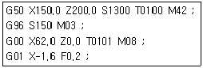
- 150
- 1001
- 770
- 1300
(정답률: 29%)
60. 프로그램 작성자가 프로그램을 쉽게 작성하기 위하여 공작물 임의의 점을 원점으로 정해 명령의 기준점이 되도록 한 좌표계는?
- 기계 좌표계
- 절대 좌표계
- 상대 좌표계
- 잔여 좌표계
(정답률: 40%)